Understanding Human Mobility from Big Mobile Device Data
Junchuan Fan, Ph.D Kathleen Stewart, Director
Center for Geospatial Information Science
Using state-of-art big geospatial data computing platforms (e.g., Apache Spark + Geomesa + Accumulo) , we develop innovative and efficient approaches to retrieve, model and visualize human mobility patterns from diverse data sources , including:
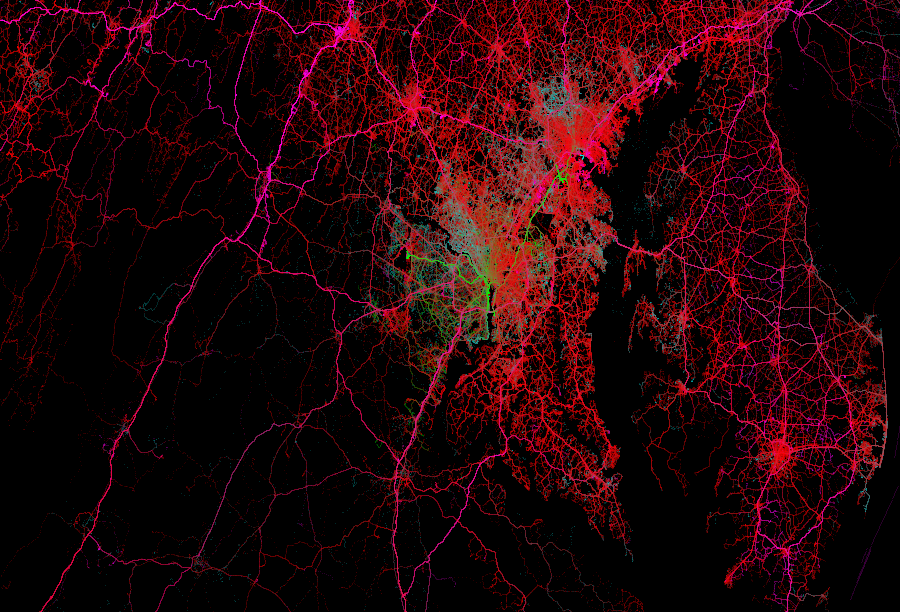
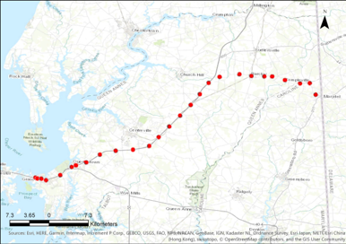
INRIX trajectory data
Collected using GPS trackers (embedded GPS)and mobile devices (using an app)
GPS waypoints with unique ID on each trip
Four months of data from 2015
February (3,565,361 trips, 398,652,043 waypoints);
June (4,835,882 trips, 152,604,037 waypoints);
July (4,868,583 trips, 100,246,683 waypoints);
October (6,420,576 trips, 725,217,440 waypoints)
|
Uncertainty in GPS positioning, simply using nearest segment to snap the waypoint is problematic |
|

|

|
Large and irregular time intervals between two waypoints (1~2mins) may cause gaps between road segments in the same trip.

Using Spark for trajectory reconstruction
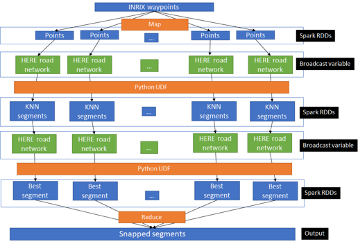

Passenger Vehicle Trajectories
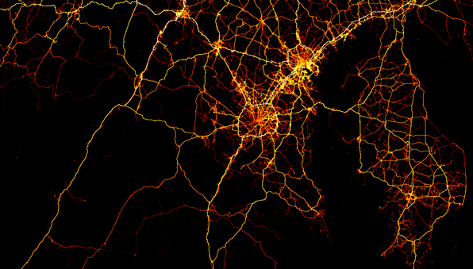
Truck Fleet Trajectories
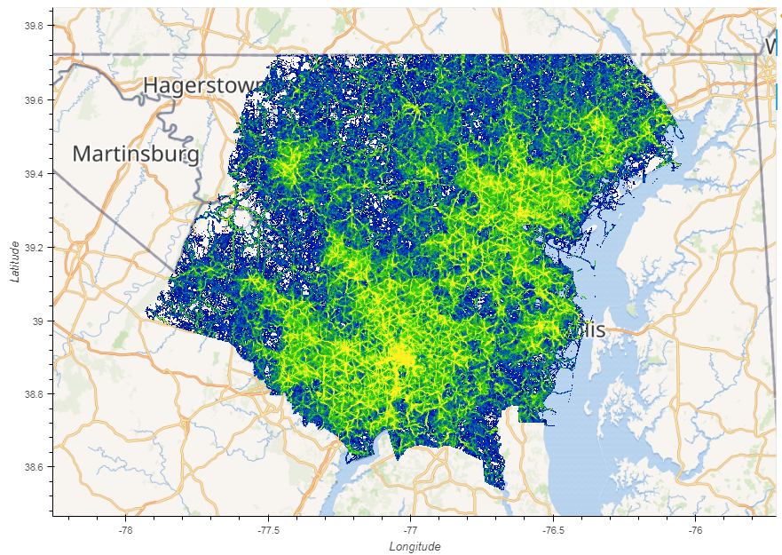
cellphone data
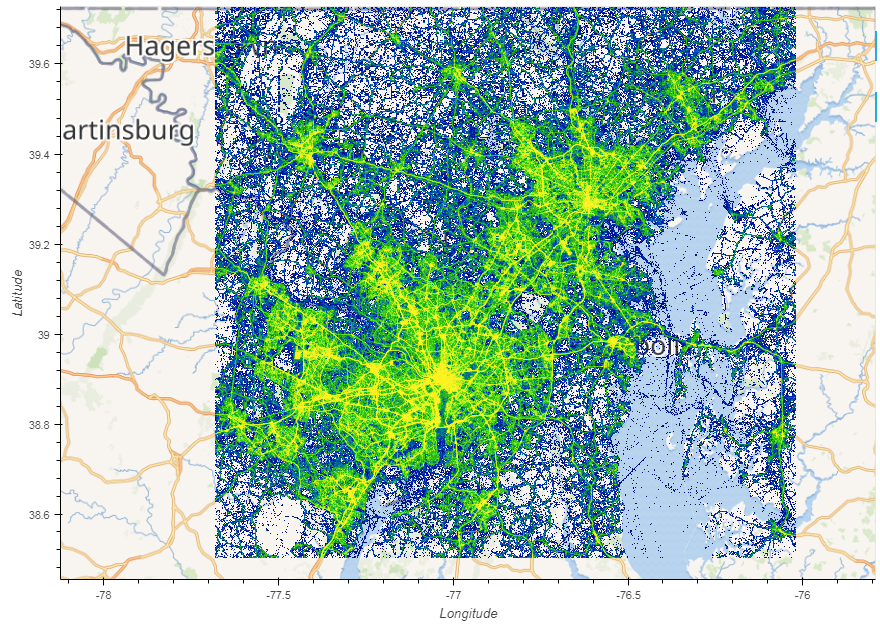
GPS Micro data
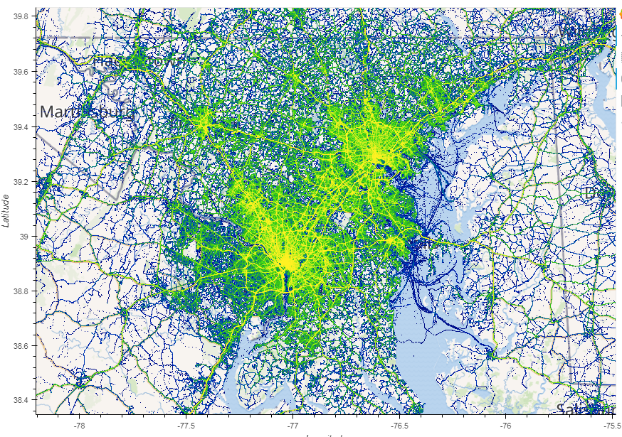
vehicle trajectory data
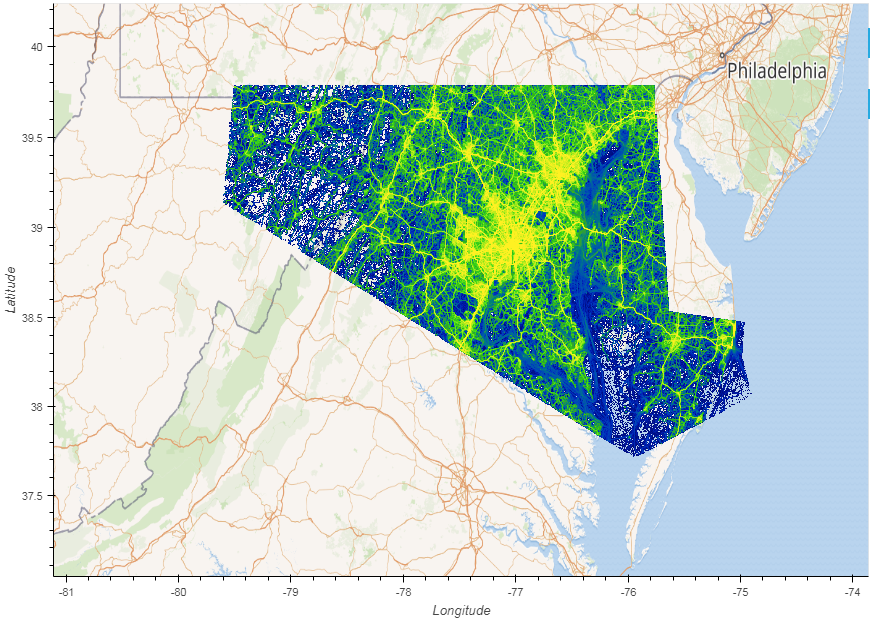
location-based mobile app data
 cellphone data
cellphone data
 GPS Micro data
GPS Micro data
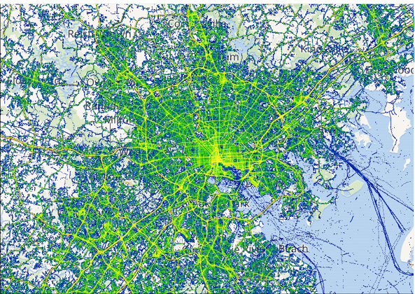
vehicle trajectory data
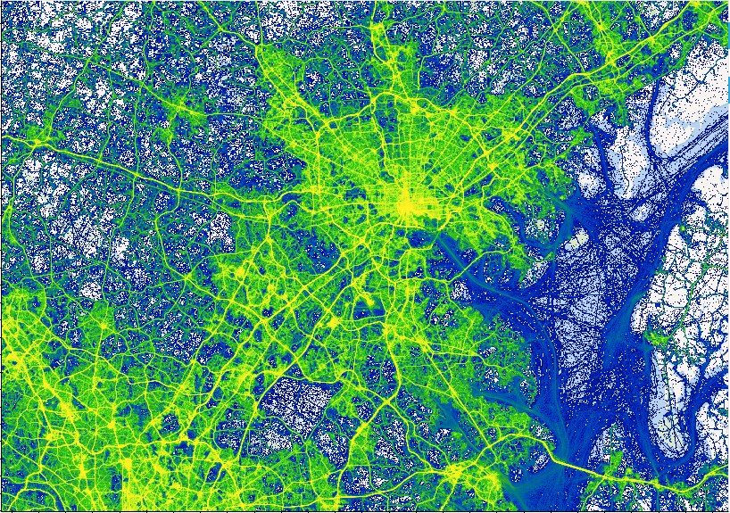
location-based mobile app data
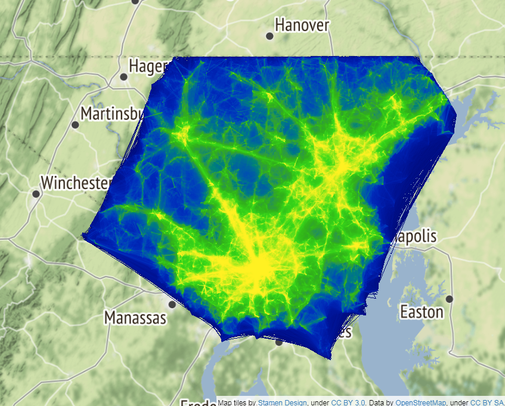
cellphone data
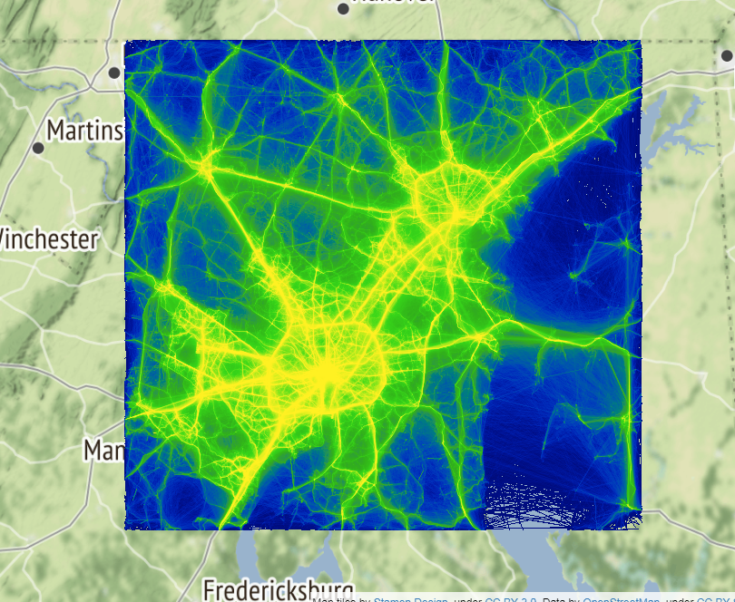
GPS Micro data
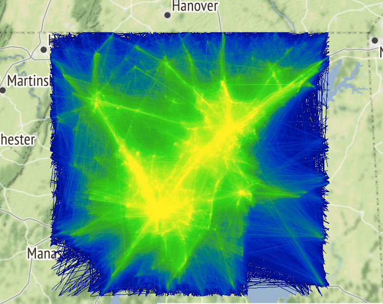
vehicle trajectory data
 location-based mobile app data
location-based mobile app data
 location-based mobile app data
location-based mobile app data

Activity spaces of students on a campus